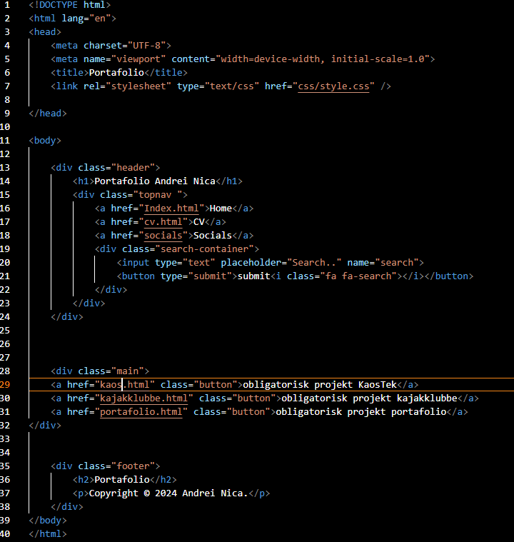
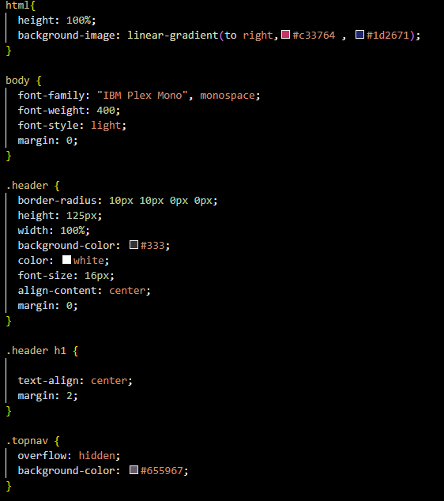
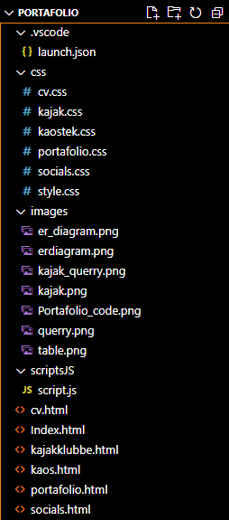

Med porteføljen begyndte jeg med at lave et almindeligt HTML-layout. Jeg startede med en header og en navigationslinje, tilføjede en main, der indeholder knapperne, som når du klikker på dem, går til det tilknyttede projekt, og jeg lavede også en footer.
Efter jeg havde lavet layoutet med HTML, begyndte jeg at lave CSS'en, og det tog lidt tid, så jeg kunne få det hele til at se godt ud.
Her er alle mine filer, som jeg havde brug for til at lave dette portefølje projekt.
